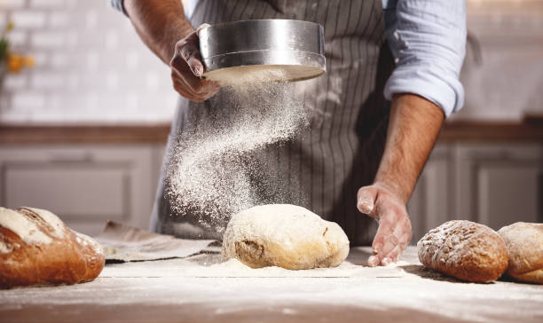

Preparación
Los ingredientes
Para elaborar 1 kilo de pan aproximadamente 750 gramos de harina de fuerza, 30 gramos de levadura de panadero, media cucharada de sal, 400 ml. de agua tibia y si quieres, una pizca de azúcar.
La Preparación
Empieza tamizando la harina y la sal dentro de un recipiente hondo. Si has decidido utilizar un poco de azúcar, mézclalo con la levadura y seguidamente acaba de mezclarlo con el agua tibia e incorpóralo sobre la harina.
Mezclarlo hasta que consigas una pasta que sea firme y pegajosa, entonces, prepárate la superficie de trabajo, por ejemplo la encimera, y enharínala. Dispón sobre ella la masa y empieza a amasarla hasta que veas que se queda elástica y brillante.
Cuando veas que la masa ya esté a punto forma una bola y colócala en el recipiente hondo que utilizaste. Cúbrela con film transparente y deja reposar hasta que veas que dobla su volumen, dependiendo de la temperatura y de la humedad, tardará entre 1 y 2 horas.
Ahora comprobarás si la masa ya está a punto, presiona con un dedo la masa y si tu huella se mantiene unos instantes, ya está lista. Entonces vuélvela a amasar y forma una bola que cubrirás con un trapo, dejándola reposar unos 15 minutos más. Pasado este tiempo vuelve a formar la bola y volver a tapar con el trapo.
Ahora dejarás que fermente hasta que nuevamente vuelva a duplicar su volumen, aproximadamente 1 hora, entonces ya puedes preparar el pan para el horneado. Dale la forma deseada y hazle unas cuantas incisiones en la superficie, a tu gusto.
El horno deberá estar precalentado a 220º C y deberás poner un recipiente con agua para darle humedad. Introduce el pan, al cabo de 20 minutos, saca el agua y déjalo hornear 15 minutos más. Entonces reduce también la temperatura a 190º C y mantenla durante el resto de cocción.
Si quieres elaborar un pan un poco más rústico, sustituye una parte de harina blanca por otro tipo de harina como la de centeno, harina de cebada, harina integral, etc. y si puedes hacerlo en un horno de leña, mejor que mejor.